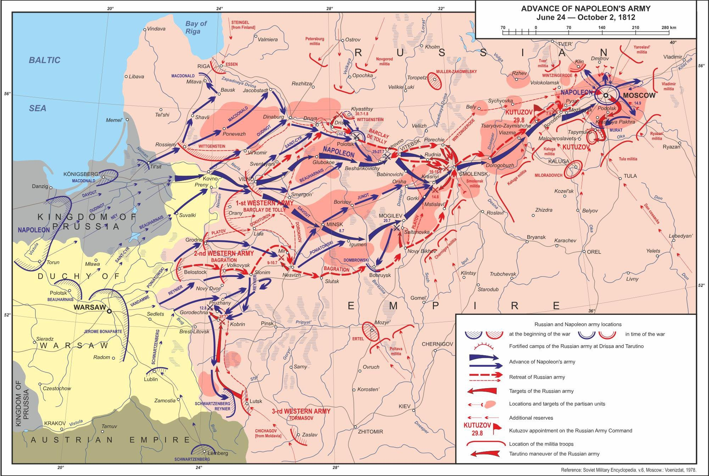
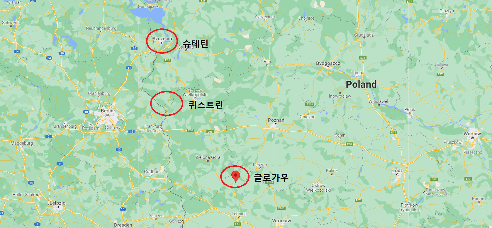
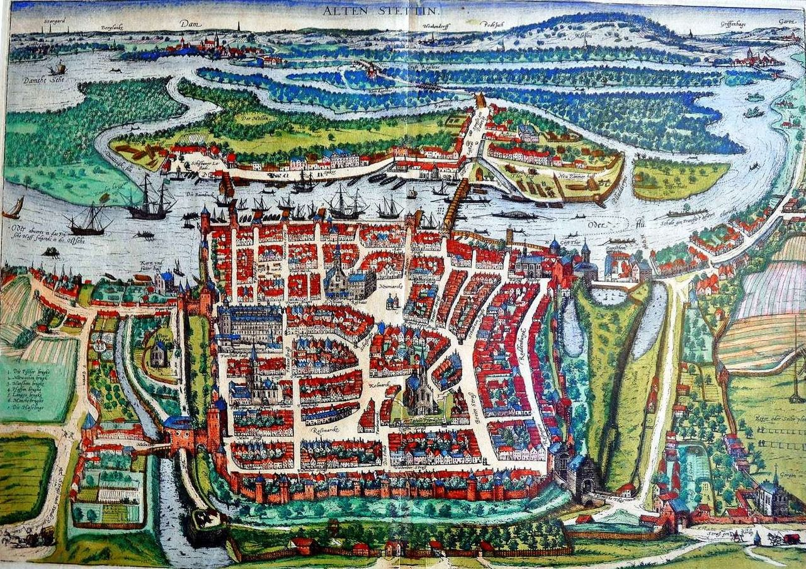
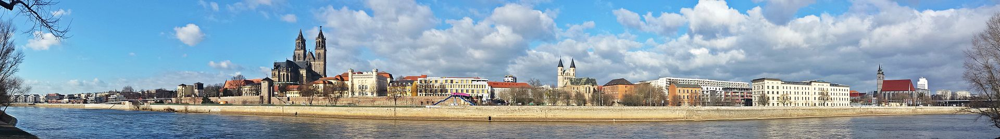
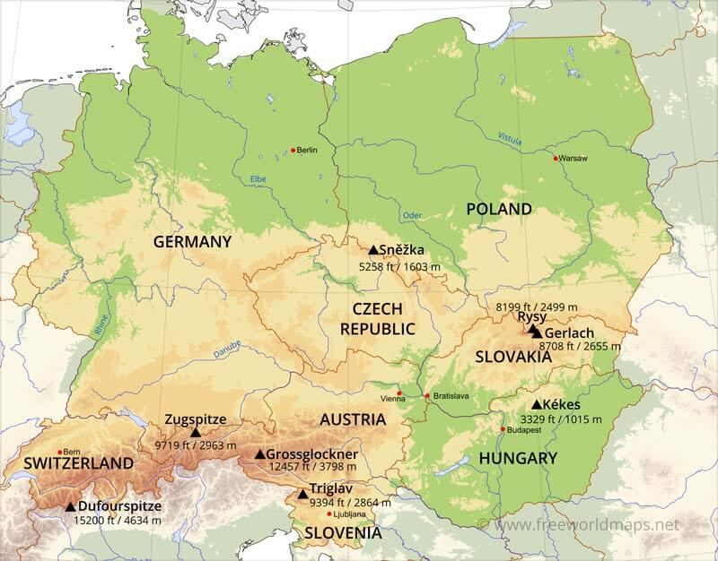

원정 실패의 계산서 - 빈털터리 나폴레옹
게시: 2022-02-07T06:30:26+09:00
12월 19일 조례부터 정무를 시작한 나폴레옹은 무척 기분이 좋아보였고 의욕이 넘쳤습니다. 전례없는 패전에 불안해하던 그의 정부 각료들은 갑자기 황제가 파리에 나타났다는 소식에 허둥지둥 정신을 못차렸는데, 그런 관료들에게 나폴레옹 개인이 뿜어내는 아우라는 대단한 것이었습니다. 전에 러시아 원정을 떠나면서 독일이나 이탈리아 등 비(非)프랑스인 장교들조차도 먼 발치에서나마 나폴레옹을 보고는 자기로 모르게 흥분되고 감화되어 열정적으로 자기도 모르게 '황제 폐하 만세'를 외쳤다고 언급한 적이 있었지요. 대부분의 왕정이 다 그렇긴 합니다만, 확실히 나폴레옹의 프랑스는 나폴레옹 개인의 개입 여부에 따라 분위기가 확연히 달라졌습니다. 나폴레옹은 즉각 새로운 병력 모집과 부대 편성을 위한 지시를 부지런히 날리기 시작했고, 프랑스라는 웅장한 서유럽 대국은 나폴레옹 버프를 받아 활발히 다음 전쟁 준비를 위해 돌아가기 시작했습니다. 뭔가 새로운 군대를 일으키기 위해서는 먼저 남은 군대가 얼마나 되는지 살펴봐야 합니다. 여러번 언급했듯이, 나폴레옹이 러시아에 끌고 들어간 그랑다르메의 총인원수 자체가 불명확하고, 끌고 나온 인원수는 더욱 불명확합니다. 그러나 대충 따져보면 네만 강을 넘어 들어간 인원수는 약 60만에 달하고, 살아서 빠져나온 인원은 약 12만 정도입니다. 12만이나 남았다고 좋아할 일이 아니었습니다. 그 중에서 5만은 별다른 전투를 벌이지 않으며 몸을 사리다가 전세가 불리해지니 싹 몸을 빼서 돌아간 오스트리아군과 프로이센군이었거든요.

(애초에 나폴레옹은 프로이센과 오스트리아를 그다지 믿지 않았습니다. 따라서 프로이센군은 북쪽 끝, 오스트리아군은 남쪽 끝에 배치하여 큰 그림으로 보면 좌우 양익을 맡도록 했습니다. 덕분에 두 나라 군대는 큰 전투를 겪지 않았고, 라트비아의 수도 리가(Riga)를 공략 중이던 프로이센 장교들은 워낙 할 일이 없어서 가끔씩 발트 해에 수영을 즐기러 갔다고 합니다. 그럼에도 불구하고 프로이센군이나 오스트리아군이나 모두 비전투 손실은 적지 않았습니다. 당시 전쟁에서는 적의 탄환보다는 질병이 훨씬 흔한 죽음의 원인이었거든요.) 기억하시겠지만 프로이센군과 오스트리아군을 제외하고 실제 러시아 본토 깊숙이 쳐들어간 것은 약 50만, 그 중 약 2/3인 30만 정도가 프랑스군이었고 나머지 1/3인 20만 정도가 폴란드, 바이에른, 뷔르템베르크, 이탈리아 등 동맹군이었습니다. 그 중에서도 폴란드군이 거의 10만 정도로 절대 다수를 차지하고 있었지요. 실제로 프로이센군과 오스트리아군을 제외하고 남은 귀환병 7만 중에 프랑스군은 절반인 3만5천에 불과했고, 나머지 3만5천의 외국 동맹군 중 2만4천 정도는 폴란드인들이었습니다. 이 폴란드들은 대부분 포니아토프스키의 지휘 하에 대부분 나폴레옹의 1813년 봄 작전에 합류합니다. 이렇게 폴란드군은 생존률이 25% 정도로 높은 편이었는데, 이것은 그들이 그래도 러시아의 척박한 환경에 가장 익숙했기 때문이었습니다. 나폴레옹의 충실한 독일 동맹인 바이에른군은 3만2천이 러시아로 들어갔다가 4천이 살아돌아와 생존률이 12% 정도에 불과했습니다. 외젠의 지휘하에 용감히 싸웠던 이탈리아 왕국군 5만2천 중 살아돌아온 것은 3천도 되지 않았습니다. 생존률이 5%에 불과했습니다. 그나마 위에서 언급한 12만 외에, 약 3만 정도가 12월 훨씬 이전에, 가벼운 부상이나 호송 등의 임무로 인해 미리 러시아에서 빠져나온 것이 다행이었습니다. 그리고 정예부대일 수록 생존률이 높았던 것도 다행이었습니다. 나폴레옹의 근위대는 생존률이 30~40%에 달했고, 장교들의 생존률이 사병들보다 높았습니다. 나폴레옹의 러시아 원정군은 이렇게 인원 피해도 심각했지만 특히 말과 대포 등 각종 장비 측면에서도 엄청난 피해를 입었습니다. 말은 약 16만 마리를 상실했고, 대포도 1천문 이상을 상실했습니다. 특히 안 좋은 것은 러시아 원정을 위해 폴란드 일대에 거대한 군수 창고를 건설하고 거기에 쌓아놓은 수많은 예비 무기와 물자가 고스란히 러시아군 손에 들어갔다는 것이었습니다. 뮈라는 요크 장군이 이끄는 프로이센군이 러시아군과 단독강화를 맺은 것을 핑계로 계속 후퇴만 계속 하고 있었는데, 마침내 1월 15일, 당시 포젠(Posen, 폴란드어로는 포즈나니 Poznań)에 주둔하고 있던 외젠에게 넘기고 나폴레옹처럼 자신의 근거지인 나폴리로 혼자 돌아가버렸습니다. 포젠의 위치는 바르샤바 서쪽으로 300km 떨어진 곳이었습니다. 이미 바르샤바의 방어는 완전히 포기한 상태였던 것입니다. 실제로 거의 형식상으로만 바르샤바를 지킨답시고 주둔해있던 슈바르첸베르크 대공의 오스트리아군은 2월 5일, 소수의 코삭 기병들이 바르샤바 외곽에 나타나자 기다렸다는 듯이 바르샤바를 텅 비워주고 오스트리아 본국으로 완전히 철수해버렸습니다. 포니아토프스키의 폴란드군도 어쩔 수 없이 남쪽의 옛 폴란드 수도인 크라코프(Krakow)로 물러났고, 러시아군은 바르샤바에 무혈입성했습니다.
12월 10일 밤 나폴레옹이 바르샤바의 '영국 호텔'에서 폴란드 관료들에게 '난 봄에 오데르 강변에서 러시아군과 2~3차례 싸울 것'이라고 오데르 강을 콕 집어 언급했던 것은 다 이유가 있었습니다. 작년 여름 러시아 침공 준비를 하면서 나폴레옹이 건설한 군수 창고가 슈테틴(Stettin, 폴란드어로는 슈쩨친 Szczecin), 퀴스트린(Küstrin, 폴란드어로 코스츠르진 나드 오드롱 Kostrzyn nad Odrą), 글로가우(Glogau, 폴란드어로는 Głogów 궈구프) 등에 있다고 했었지요. 이것들은 모두 폴란드와 독일 국경선 근처인 오데르 강을 끼고 있는 요새 도시였던 것입니다. 나폴레옹은 슈테틴에 263문의 야포, 100만발의 머스켓 탄약포, 90톤의 화약을, 퀴스트린에는 108문의 야포와 100만발의 탄약포를, 그리고 글로가우에도 108문의 야포와 100만발의 탄약포, 45톤의 화약을 축적해놓았기 때문에, 자신의 군대를 유지하기 위해서는 오데르 강변의 이 요새들을 반드시 수중에 쥐고 있어야 했습니다.

(바르샤바와 베를린 사이에 있는 나폴레옹의 주요 요새인 슈테틴, 퀴스트린, 글로가우의 위치입니다. 모두 오데르 강변에 있는 요새들입니다.)

(오데르 강 하구에서 발트해로 합쳐지는 곳에 위치한 슈테틴의 1630년 경 모습입니다. 서부 포메라니아의 주도인 슈테틴은 한자동맹, 스웨덴과 덴마크, 프로이센 등 사이에서 복잡한 역사를 가지고 있는 도시인데, 나폴레옹 당시에는 프로이센의 지배를 받고 있었습니다. 제4차 대불동맹전쟁 때인 1806년, 위 그림에서 보시다시피 강력한 방벽을 갖춘 슈테틴 요새는 폰 롬베르크(Friedrich von Romberg) 장군이 5천3백의 병력으로 지키고 있었으나, 프랑스군의 광기병 라살(Lassalle) 장군이 다 죽여버리겠다고 하도 미친 놈처럼 협박을 해대자 엄청난 대군이 쳐들어온 것으로 착각한 폰 롬베르크는 순순히 성문을 열고 항복했습니다. 알고보니 라살은 불과 8백의 기병만을 거느리고 있었습니다.) 그러나 그것이 결코 쉽지 않았습니다. 봄이 되기 전에는 러시아군도 감히 폴란드를 침공하지 못하라리라고 나폴레옹은 생각하고 있었는데, 그건 한가지 정확한 판단과 한가지 그릇된 판단에 근거한 것이었습니다. 정확한 판단은 러시아군의 피해도 만만치 않아서 봄이 되기 전까지는 병력 보충과 재편성을 하느라 시간이 필요할 것이라는 것이었습니다. 실제로 러시아군의 인명 피해는 놀랍게도 프랑스군과 거의 비슷했습니다. 프랑스군은 약 40만이 사망했는데 그 중 대략 10만이 전사했고 30만은 비전투 손실이었습니다. 러시아군도 그 숫자나 비전투 손실 인원 비율이 깜짝 놀랄 정도로 프랑스군과 비슷했습니다. 나폴레옹이 정확한 러시아군 사상자 수를 알 수는 없었겠지만, 러시아군도 피해를 다독일 필요가 있다는 것은 알고 있었습니다. 잘못된 판단이라는 것은 나폴레옹이 프로이센군이나 오스트리아군이 이렇게 쉽사리 러시아군 편에 붙을지 몰랐다는 점입니다. 프로이센군은 적어도 2월말의 칼리쉬(Kalisz) 조약 때까지는 완전히 러시아군과 동맹을 맺지는 않았고, 오스트리아군은 적어도 여름 전까지는 중립을 지켰지만, 적어도 러시아군을 막을 생각은 전혀 없었습니다. 그러다보니 폴란드 전체가 삽시간에 프랑스로부터 고립되는 결과를 낳았습니다. 특히 프로이센의 배신은 나폴레옹이 구상하는 1813년의 대반격 작전에 큰 타격을 주었습니다. 프로이센에도 각종 군수 물자가 잔뜩 쌓여 있었습니다. 가령 옛 프로이센의 도시였던 마그데부르크(Magdeburg)의 요새에도 야포 462문과 공성용 중포 100문, 그리고 135톤의 화약과 함께 200만발의 머스켓 탄약포가 축적되어 있었습니다.

(엘베 강변에서 바라본 마그데부르크의 구시가 전경입니다. 성모수도원(Unser Lieben Frauen Kloster)과 성요한교회(St. Johanniskirche)가 보입니다.) 원래부터 프로이센은 프랑스에 대한 감정이 좋지 않았고, 나폴레옹도 그걸 뻔히 알고 있었습니다. 그런데 왜 나폴레옹은 거기에 대해 대비를 하고 있지 않았을까요? 당연히 하고 있었습니다. 프로이센의 주요 요새는 대부분 프랑스군이 쥐고 있었습니다. 심지어 프로이센의 수도 베를린의 요새에도 프랑스군이 주둔하고 있었습니다. 이렇게 프로이센 각지를 꽉 쥐고 있었기 때문에 감히 프로이센은 배신을 꿈꾸지 못할 거라고 생각했던 것입니다. 그러나 나폴레옹조차 1812년 러시아 원정이 이렇게까지 참혹한 실패로 끝날 것이라고는 예상을 못했던 것이 문제였습니다. 나폴레옹이 워낙 철저하게 패배했기 때문에, 프로이센 국왕 빌헬름 3세는 이제 대세가 기울었다는 확신을 가지게 되었고, 그래서 궁정을 이끌고 베를린을 야반도주하여 동쪽의 러시아군을 찾아가 칼리쉬(Kalisz) 조약을 맺었던 것입니다. 상황이 이렇다보니 이제 고작 2만으로 줄어든 러시아 원정군을 거느리고 있던 외젠은 속절없이 계속 후퇴할 수 밖에 없었습니다. 뮈라와는 달리 책임감이 넘쳤던 외젠은 비록 나폴레옹이나 다부, 마세나와 같은 군사적 천재는 아니었지만 상황에 어울리는 착실한 사령관이었습니다. 그는 병사들을 다독여가며 폴란드와 프로이센 방어를 위해 최선을 다했습니다. 사병 출신으로 근위대에서 중위 계급까지 승진했던 쿠아녜(Jean-Roch Coignet)는 러시아 원정에서 살아남은 사람 중 하나였는데, 그는 당시 외젠에 대해 '적어도 3일에 한번씩은 최전방을 부지런히 돌아다니며 적진을 감시하는 등 지휘관으로 할 수 있는 모든 바를 다했다'라며 칭찬했습니다. 하지만 머릿수 부족에는 방법이 없었습니다. 그는 결국 2월 12일 포젠에서 후퇴하여 처음에는 오데르 강변으로, 나중에는 베를린까지 포기하고 엘베 강변까지 물러나야 했습니다.

(중부 유럽의 주요 강들입니다. 동쪽에서 서쪽으로는 비스와-오데르-엘베 순입니다.) 일패도지라고, 이렇게 한번 대규모 원정을 처절히 말아먹고 나니 나폴레옹의 신세도 순식간에 한심해졌습니다. 이렇게 거지꼴이 된 상황에서 나폴레옹은 처음부터 새롭게 군대를 만들어야 했습니다. 전쟁 준비를 위해서 필요한 것은 무엇무엇이 있을까요? 엄청나게 많습니다만 당장 필요한 것 3가지를 고르라면 사람, 무기, 그리고 돈입니다. 이제 나폴레옹이 각각의 문제를 어떻게 해결해나가는지 보시겠습니다. Source : 1812 Napoleon's Fatal March on Moscow by Adam Zamoyski The Life of Napoleon Bonaparte, by William Milligan Sloane
https://en.wikipedia.org/wiki/Magdeburg https://en.wikipedia.org/wiki/J%C3%B3zef_Poniatowski https://www.freeworldmaps.net/europe/central/physical.html